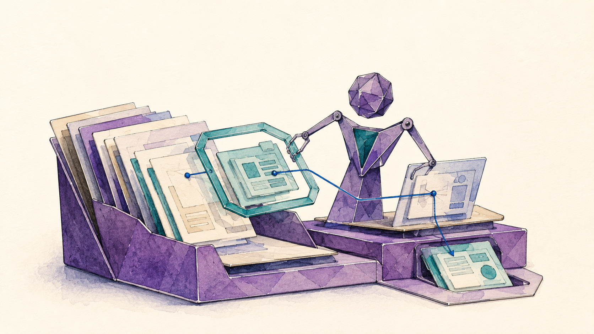

9 and 10 November 2026
Agentic-Engineering-Workshop
Uni for Life, Universität Graz
Date 9 and 10 November 2026, three units of two hours Event Uni for Life, Universität Graz Audience professionals from companies and institutions across disciplines Teaching language German Status planned

Specialisation
Three units of two hours each, six contact hours in total, which the first run distributes over the two registered days. This is one of the shortest instances of the line, so the cut is narrow. Two further runs are fixed for 2027 with one unit per day, which makes the format a recurring course, and the register carries no trace of them.
The subject is the steering of agentic work rather than the operation of a chat window, which is what separates this instance from the foundational generative-AI series of the same programme it sits on. The audience works outside academia, so the domain framing runs through professional knowledge work and the edition case material of the research instances does not transfer. Applications named for the second unit are grant applications, document production and multi-step office work.
The instance installs and operates an agent in the terminal, which sets its prerequisites and its room requirements. The exercise is progressive across the three units, from a first agentic task through the participants' own knowledge base to a small application of their own. Operator feedback added the verification of agent results against one's own holdings as an explicit point of the second unit.
The case material is deliberately general, an AI strategy for a fictitious institute, with Office documents that carry built-in data traps and a sample knowledge base; participants' own data is welcome alongside. Because the scenario is synthetic, no third-party rights attach to it, which makes this the one instance whose participant data could in principle live in a public repository. That reading is an inference from the file provenance, since no source states a licence. The cut from the Full Slide Deck onto the three units is still an open task.
The three units
- Setup, terminal and agentic fundamentals, meaning the distinction between chatbot, assistant and agent, installing and configuring the harness, permissions and security, and a first agentic task.
- Building a knowledge base as the working basis for agents, analysing and preparing folder structures and files, developing concepts and plans, defining human control points, and verifying agent results against one's own holdings.
- Light coding and own applications, meaning requirements, a produced implementation plan, a small application or prototype, and the judgement of what agentically developed solutions can and cannot carry.
Module coverage
- Understanding Large Language Models, touched briefly Drawn on inside unit one at the depth the distinction between chatbot, assistant and agent requires.
- Prompt Engineering, touched briefly The entry layer inside units one and two. Six contact hours leave no room for a block of its own.
- Knowledge and Context Engineering, taught in full and an emphasis Unit two builds the knowledge base as the working basis for agents, which is the part of the material that transfers most directly to professional knowledge work.
- Agentic Engineering, taught in full and an emphasis Unit one carries harness setup, permissions and security, unit three the progression to a small application of one's own.
- Critical Perspectives and Governance, touched briefly Present through the verification point in unit two and through permissions and security in unit one. No governance block of its own is programmed.
Materials
- Slide deck (Uni for Life 2026) To be cut from the Full Slide Deck onto the three units. The register carries no link yet.
- Lecture Notes (Uni for Life 2026) In preparation in the instance folder. No slide texts exist for this instance yet.
- Example data for the scenario Office files with built-in data traps plus a sample knowledge base, held in the operator's own drive and distributed to participants.
Provenance
This instance is a documented specialisation of the Full Slide Deck and the Full Lecture Notes, which are maintained once and cut into five modules. What this instance selects, cuts and adds is recorded in its repository folder, workshops/2026-11-09-ufl.